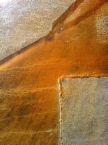
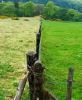
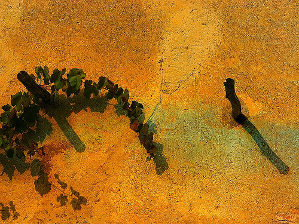

the coherence way
a priori
The realm in which I work is a place of mystery and opportunity that requires working with “not knowing” and “staying in the mystery” long enough to see what “IS.”
What is the quality that enables these round trips to “the mystery” and back? I submit it is love.
The terms "a priori" and "a posteriori" are used in philosophy to distinguish two different types of knowledge, justification, or argument: 'a priori knowledge' is known independently of experience (conceptual knowledge), and "a posteriori knowledge" is proven through experience. It is my sincere hope that over time we move beyond our subjective ideas and into those that are true, beyond our own experience, something that resonates on its own accord. Thus what is below is my experience of A PRIORI, still quite personal, but me thinks larger that "me"..............

what matters
More than likely you are reading this because you are looking for an architect or interior designer for your home, community or healing environment. You are seeking to find a kindred spirit who will “get” what you seek to manifest. You are looking for a “co-creator” and a seasoned professional (or maybe amateur? see below) who can help your manifest your vision or help you understand you opportunities. I submit that what really matters in your selection process is “fit”. What matters most is that you and your co-creator are on the same page and passionate about a shared vision. Then supported, you can enter the realm of “creation”, a process distinct in a world of “built” environments.
In what follows, I have tried to explain my innermost convictions and inspirations about what I do in hopes that you will know if my values resonates with your soul.
beginnings
“Everything begins in the beginning”, seems obvious huh? But after my many years in this profession, I have seen every kind of attempt, whether deliberate or accidental, to begin at places that are not the beginning point. People begin with lines on paper, survey documents, consultants reports, hiring a builder, Uncle John’s conceptual design, the local design review requirements, just the latest “must have” chef’s range…………
But really the beginning is about you and your clearest thoughts and visions, and it is about developing a complete understanding of the land on which you seek to build new or remodel existing structures. It is about finding a “co-creator” that supports your vision and can help navigate the way to what is true. It then involves a process of very creative yet disciplined progression towards truth as every level, each level like rungs on a ladder that lead to the next. I have rarely, if ever, seen a rung be skipped successfully.
In my own life experience I have come to deeply appreciate that “we don’t know what we don’t know”! Yes, when you work with a professional who has been there many times before, you will be benefiting from their expertise and experience. And indeed, you can execute an entire project from that expertise. But, this is not the realm in which I work. This is not the realm of “creation” of living environments. The realm in which I work "place" is a place of mystery and opportunity that requires working with “not knowing” and “staying in the mystery” long enough to see what “IS“ and how to work with that.
staying in the mystery
The greatest minds of our time generally have something in common, they are interested in major leaps forward, not just incremental opportunities to publish and be noticed. They are “on to something”, something larger than what is currently known, something beyond the horizon of our world view. Though my design methods are a dynamic and systematic process, a magical part of the creative conscience is lingering in the unknown, the un-manifest. It is there that true surprise and magic is manifest. In order to truly create, it is essential to enter “the mystery” and stay there long enough to apprehend what there is to learn. And once you can get to that inspiration, bring back something previously not yet known.

amateur or professional
So what is the quality that enables these round trips to “the mystery” and back to our world of creation into the oneness that is the truth of our design opportunity? I submit it is love.
Who is best able to go to mystery and then return and begin the unpacking?
I submit the amateur!! I was a professional for 30 years, and my professional mind was awash in professional “expertise”, responsibilities, employees, deadlines, insurance, and stress. As a professional I did wonderful projects to be sure from my offices with my staffs, contracts, and specifications, and all the while staying on this side of the “mystery”. It has taken me 10 more years to finally return to my “amateur” status, but it is the greatest gift I offer my clients because my impetus is free from anything other than co-creation from love.
Wikipedia defines an amateur thusly:
“An amateur is generally considered a person attached to a particular pursuit, study, or science, without formal training or pay. Although they sometimes can be very highly skilled, an amateur differs from an expert that is a person with extensive knowledge, ability, and/or training in a particular area of study, while a professional is someone who also makes a living from it. Translated from its French origin to the English "lover of", the term "amateur" reflects a voluntary motivation to work as a result of personal passion for a particular activity”.
Sure I am a seasoned professional in architectural and interior design and project management, but I feel my greatest credentials in the field of helping my co-creators “Finding Home” is indeed the love which fuels the “amateur” passion for “home” and “getting life right” this has propelled me for 40 years now on my quest in the “art of living”……… of creating living place.
finding home
“Finding Home”… is the way I have re framed the idea of “Home” not as a destination but rather a journey. Home is not a “place” but rather an ongoing search for that which makes us fully connected with our lives at the most fundamental and profound levels. For most of us, we have not even reached the doorway to this potential. We are so preoccupied with the form, or materiality, of the “stuff” we assemble to call a place home, that we have not even begun to interact with the truly desired “experience” of our home. From time to time we actually do have direct experience of this “essence” of what home is about, a fleeting, almost accidental “brush” with it, rather than an intentioned, evolving and deeply satisfying experience of the unity, belonging, the “oneness” and joy of getting our life right.
Now as an “amateur” I too are coming from a place of great humility and curiosity in this quest. I have been professionally and avocationally deeply focused on home for more than 40 years. And I have only in the last few years, become aware that I am now again “amateur” in creating the “living art” I have been seeking as my experience of “home”.
I too have been seduced by materialism, by a cacophony of splendid-ness, anticipating a time in the future when we get it right, of a retirement time when we will finally slow down and smell the roses, when we can experience the essence of our lives every day. Well folks, I am at the end of my 50's now and roses are not going to have any more fragrance at some point in the future when I can settle into the grace of our everyday lives. The time is now.
deep ecology
“Finding Home” is not a shallow quest. It is deep. Thus we have adopted both the name and philosophies of “Deep Ecology” in finding our way “home”. Depth has not been highly valued in our culture of late. We know that this quest will not be of interest for those looking for quick results and instant gratification. Hopefully, for those of you with a deep desire to live authentically, artfully, magically, “deep ecology” will resonate for you too.
Wikipedia defines “Deep Ecology” as… a somewhat recent branch of ecological philosophy (ecosophy) that considers humankind an integral part of its environment…. Deep ecology describes itself as "deep" because it persists in asking deeper questions concerning the "wh at " and the "how"… Deep ecology seeks a more holistic view of the world we live in and seeks to apply to life the understanding that separate parts function as a whole…. Deep ecology seeks to develop wisdom by focusing on deep experience, deep questioning and deep commitment. These constitute an interconnected system. Each gives rise to and supports the other…”
For me, “Deep Ecology” is looking beyond the parts and pieces of our often fragmented lives and looking deep within the totality of our experience and values. It is a way of viewing and indeed, living our lives, and the impact of our lives, from deeper appreciation and greater awareness.
ikebana
Ikebana is the Japanese art of flower arranging. As with many things “Eastern” the art form is imbued with a fundamental wisdom at its core. Ikebana’s unique wisdom is that no blossom, no plant, no branch is ever “ugly” or “unusable”, one has only to understand how to work with it and coax - out its inherent perfection and its place in the larger context of the whole arrangement. Sometimes this character of a single branch or blossom, once understood, is so profound that it becomes the singular expression in an Ikebana work of art.
I feel that my architectural and interior design practice shares this quality of deep appreciation and “attention” to what “IS” and what is possible in the expression of the sublime. Living the principles of Ikebana in my everyday life there is always an opportunity for deeper understanding and profound creativity.
wabi sabi
We live in a very engaging, fast paced world full of wonderful stimulation, involvements and distractions that we are actively engaged at many levels.
Yet, as I have specialized in country homes, estates, retreats and healing centers I am usually creating sanctuaries design for peaceful, beautiful, enlightened, magical lifestyles. A guiding light for me in this endeavor is a small book called wabi-sabi for Artist, Designers and Philosophers. Over the years, as I have worked with this aesthetic code that informs the Zen traditions of Japanese design, I have found that the way of wabi-sabi is just as relevant to what we love about almost all indigenous, authentic and weathering beauty of every other culture on the earth.
I am a designer not a writer therefore much of what is below are the words of the author of wabi-sabi, Leonard Koren, I could not better articulate a set of values that reverberate to the essence of my design conviction. With the inspiration of wabi-sabi it is possible to accomplish the following:
Create an environment where one “...can pay maximum attention to everything happening at this very moment:” an environment in which “to be here now”.
It is the celebration of the fullness and balance of life that is the underlying purpose of a home, a healing retreat or community. ”…Combine the skills of architecture, interior and landscape design, art, food preparation and service that coalesces into a quietly exciting event that thematically coheres”.
Learn to see “…Slow way down, be patient and look very closely”
Assist my clients to achieve an environment for the experience of beauty; “Wabi-Sabi suggests that beauty is a dynamic event that occurs between you and something else...... Beauty can spontaneously occur at any moment given the proper circumstances, context, or point of view. Beauty is thus an altered state of consciousness, an extraordinary moment of poetry and grace”.
Assist my clients in placing our materialism in perspective; “Even at the most austere level of material existence, we still live in a world of things. Wabi-Sabi is exactly about the delicate balance between the pleasure we get from things and the pleasure we get from the freedom from things”.
Celebrate naturalness; “Things wabi-sabi are expressions of time frozen. They are made of materials that are visibly vulnerable to the effects of weathering and human treatment. They record the sun, wind, rain, heat, and cold in a language of discoloration, rust, tarnish, stain. warping, shrinking, shriveling, and cracking. Their nicks, chips, bruises, scars, dents, peeling and other forms of attrition are a testament to histories of use and misuse. Though things wabi-sabi may be at on the point of dematerialization (or materialization), extremely faint, fragile or desiccated they still possess an undiminished poise and strength of character.”
“Things wabi-sabi are unstudied and inevitable looking. They do not blare out “I am important” or demand to be the center of attention. They are understated and unassuming, yet not without presence or quite authority. Things wabi-sabi easily coexists with the rest of their environment.”
“Simplicity is at the core of things wabi-sabi. The simplicity of wabi-sabi is probably best described as the state of grace arrived at by a sober, modest, heartfelt intelligence. The main strategy of this intelligence is economy of means. Pare down to the essence, but don’t remove the poetry. Keep things clean and unencumbered, but don’t sterilize.”
loose fit–long life–low energy
I have been designing and building homes, estates and retreat centers for f ourty years throughout California , and singular projects in Colorado, New Hanpshire, Alaska . Over time, I have come to understand that very clear patterns of truth were emerging in all of my projects. In time, I have evolved the principles of Loose Fit, Long Life, and Low Energy: These are an over-riding set of principles that I apply to every aspect of design and planning. I believe their application is valid, not only in the process of building a dream home, healing environment, or intentional community but also in keeping it and the dream of your lifestyle alive and well. These principles will help you understand and define your grandest motivations all the way down to deciding on the smallest details involved in finishing it, making it sustainable and keeping it all working—simply, gracefully, beautifully:
Loose Fit
Recognize that life is always in a state of flux. Anticipate that change is inevitable. Design and plan for adaptability.
Seek to simplify wherever possible to provide for flexibility and freedom.
Long Life
Know thyself.......take the time to develop and understand your Nature to ensure the longevity of your creation.
Design and build with natural materials that are healthful and have always stood the test of time.
Use simple, time-tested systems that are low cost and reliable.
Do not add to the body of kitsch. It has always been generated side by side with the natural evolution of the classic traditions that mark what endures.
Design and build for generations to come with a clear understanding that tradition is not a relic of the past, that it is a living force that animates and informs the present. Tradition is not repetition of what has been, but rather it anticipates the reality of what endures, and as such, tradition is carried forward to produce something new.
low energy
Save resources and energy. In our lifetimes, the world population will double and natural resources are diminishing at a corresponding rate. Invest now for maximum efficiency and design to provide for future adaptability to new technology.
Do not spend too much. Making money already takes a huge amount of energy. Freedom is the difference between what you make and what you spend. Freedom is quality of life.
Make sure that the home you create is life sustaining and adds to your enjoyment rather than detracts from your quality of life with excessive fussiness and maintenance.

beyond green?
“Green”!! Everything today is “green” even if it is not at all green. Mostly it is “green marketing”. Green no longer has a value in describing the wise use of resource, low impact the planet earth, self-sufficiency, low energy use, low maintenance, CO2 impact and long term viability of our creations.
A few years ago I went to Colonial Williamsburg in Virginia which is a reconstruction of an entire colonial era town prominent in America’s early history. Williamsburg is an authentic, fully-functioning 17th century town right down to the inhabitants in period clothing and working with period tools and technologies. As I walked around it took little time to realize that everything about this town, as with almost all others created in the pre-industrial era, were completely green. I realized that green is an answer to industrial era ways of doing things, but we don’t have to make plywood from resin and sunflower seeds, structural beams from resin and wood chips, siding from resin and wood dust……….how about no resin at all! We don’t need to look forward for most of our solutions, we need to look back. What really matters is working with what we have, creating smaller places, reusing what we can, and working with the land, weather, climate, wind, sun, shading and energy at hand. With the exception of electricity and communication technologies of today our forebears lived very comfortable, sustainable lives with what was on hand. And, they did not waste, they conserved since almost everything was created by hand.
Yes, we work with all kinds of new technologies so that homes and healing environments have the least possible impact on the land. Technologies such as:
• Recycling of building materials
• Building systems that greatly reduce or eliminate the use of wood
• Use of indigenous building materials
• Reducing water consumption
• Water purification, alkalization, oxygenation systems
• Recycling waste water for irrigation
• Rainwater harvesting and storage
• Creating living green surfaces, green facades, tree shading, green roofs, green paving
• Recycling solid waste
• Composting organic waste
• Generating electric power from solar, wind and water energy
• Heating and cooling building interiors using natural or low energy systems.
• Heating or cooling water
• Grid linked systems that resell energy back to the grid
• Battery backup and storage systems
• Smart control systems
• Communications, internet and entertainment systems
• Supper efficient appliances and equipment
• Beautiful and efficient lighting
• Non toxic building and finishing materials
• Air quality filtration, purification, exchange systems
• Permaculture systems
• Agricultural potentials
• And others………
…..but/and, building “beyond green” has many very simple, old world, time tested ways to mitigate our 21st century, post- industrial way of life without damaging the planet we all share. Many of these ways are still beautiful and functional unlike much of what is being touted as green today. Colonial Williamsburg is a living testament to simple values and technologies that endure.